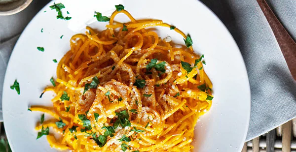

Parmesan Butternut Squash Noodles

Description
Gluten-free "pasta" recipe made with butternut squash noodles. Make a large serving as a main dish, or enjoy it as a side.
Ingredients:
- 1 spiralized butternut squash
- 2 tablespoons olive oil
- 1/4 teaspoon salt
- Black pepper, to taste
- 1/2 cup parmesan cheese
- 2 tablespoons butter
- hanful fresh parsley, chopped
Steps:
- Preheat your over to 400 degrees Fahrenheit.
- Line a large rimmed baking sheet with foil or parchment paper. On the pan, toss the squash noodles with olive oil, salt, and pepper.
- Spread the squash noodles out evenly on the pan and roast in the oven for about 10 to 15 minutes, or until the squash is tender and the edges are just starting to brown.
- Renive from the oven and toss with parmesan and butter. Plate and sprinkle on the fresh parsley.